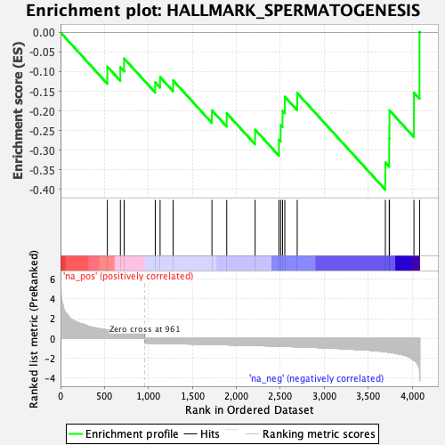
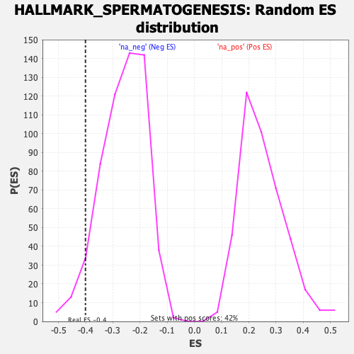

| Dataset | T11b high vs low squamous_GSEA_Ranked |
| Phenotype | NoPhenotypeAvailable |
| Upregulated in class | na_neg |
| GeneSet | HALLMARK_SPERMATOGENESIS |
| Enrichment Score (ES) | -0.40079254 |
| Normalized Enrichment Score (NES) | -1.5331686 |
| Nominal p-value | 0.053264603 |
| FDR q-value | 0.26614267 |
| FWER p-Value | 0.652 |

| SYMBOL | RANK IN GENE LIST | RANK METRIC SCORE | RUNNING ES | CORE ENRICHMENT | |
|---|---|---|---|---|---|
| 1 | Alox15 | 533 | 0.865 | -0.0874 | No |
| 2 | Ace | 681 | 0.685 | -0.0891 | No |
| 3 | Cdk1 | 724 | 0.651 | -0.0667 | No |
| 4 | Mllt10 | 1078 | -0.518 | -0.1273 | No |
| 5 | Vdac3 | 1133 | -0.528 | -0.1141 | No |
| 6 | Tsn | 1281 | -0.553 | -0.1224 | No |
| 7 | Strbp | 1723 | -0.634 | -0.1988 | No |
| 8 | Nphp1 | 1891 | -0.671 | -0.2061 | No |
| 9 | Spata6 | 2214 | -0.742 | -0.2479 | No |
| 10 | Nek2 | 2485 | -0.816 | -0.2732 | No |
| 11 | Mast2 | 2505 | -0.819 | -0.2366 | No |
| 12 | Pias2 | 2526 | -0.827 | -0.2000 | No |
| 13 | Phf7 | 2552 | -0.833 | -0.1642 | No |
| 14 | Zc3h14 | 2693 | -0.874 | -0.1547 | No |
| 15 | Hspa2 | 3696 | -1.378 | -0.3315 | Yes |
| 16 | Ift88 | 3740 | -1.428 | -0.2703 | Yes |
| 17 | Cftr | 3743 | -1.432 | -0.1987 | Yes |
| 18 | Slc12a2 | 4021 | -2.250 | -0.1536 | Yes |
| 19 | Mlf1 | 4085 | -3.382 | 0.0010 | Yes |
